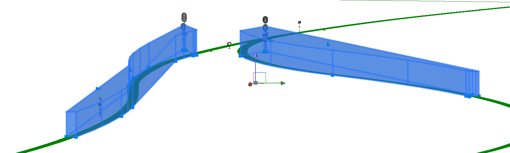
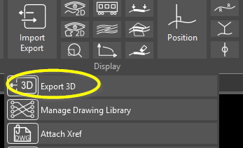
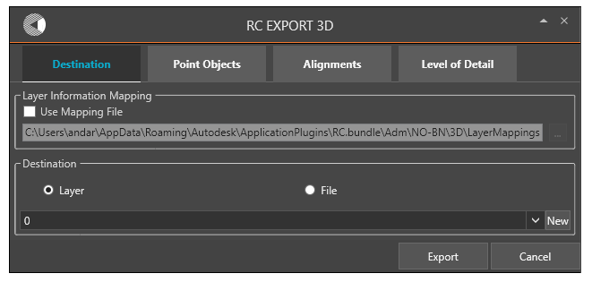
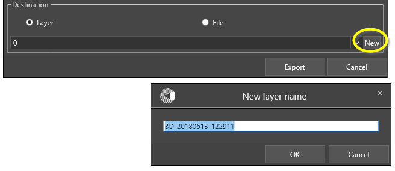
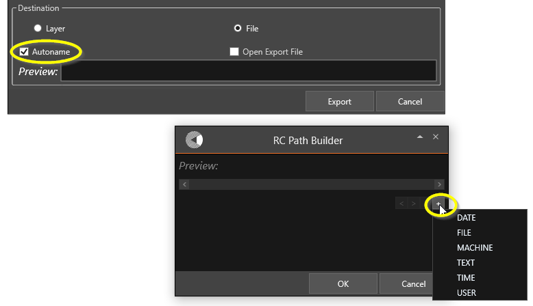
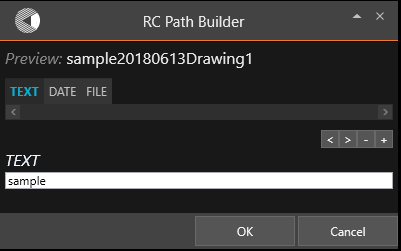
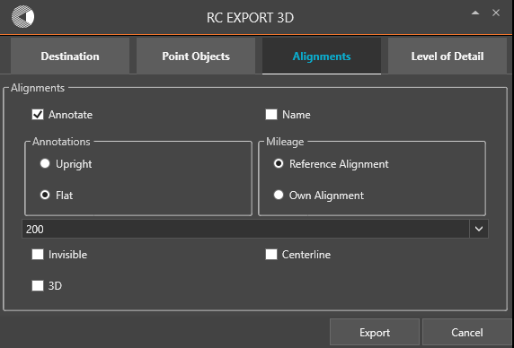

3D export
A good and accurate 3D model is essential for early detection of collisions or other design problems in initial stages.
In RailCOMPLETE, the model can be exported to 3D at any time for visualisation and to identify model issues. The examples below, shows 3d sight area and two signals exported to another layer in the 2D drawing.


Using 3D export
The 3D export is started from Import/Export -> Export 3D.

Items to be exported can be preselected before starting the Export 3D or during the export.

In the 3D export menu contains options for export destination, 3D-library as well as level of detail for the 3D objects and alignments.
Destination
Layer Information Mapping
It is possible to control the destination layer for the 3D objects by using a layer mapping file. Specify the file path in this field.
Destination
Layer The output destination can be defined as a separate file or to a target alyer.
 File If "Autname" is not selected, a file dialog will ask for the file name.
When Autname is selected, a path builder is opened when clicking inside the "Preview" text field. 
In the path builder, the file name is generated by time, date, user, matchine, file name and optional text. Move the different parameters by clicking "<" and ">" 
Point Objects
Annotate Check the "Annotate" checkbox to include text description in the 3D export.
Invisible Check this box if invisible objects is to be included in the 3D export.
Ignore Missing Models Normally missing objects are exported as 3D 3D question marks. By checking this box, missing models are just ignored.

The documentation stops here since changes are supposed to the 3D export windows.